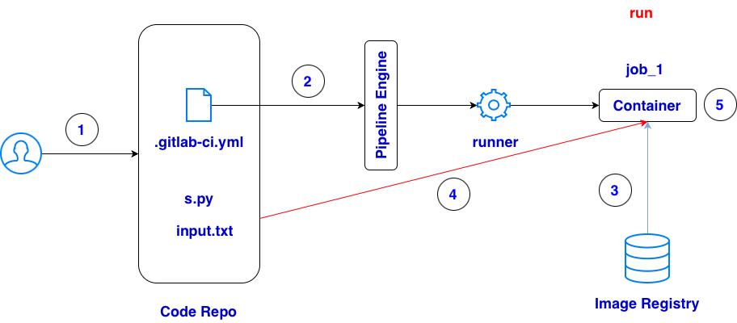
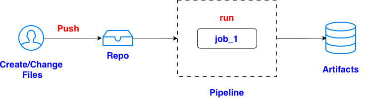

# .gitlab-ci.yml
stages:
- run
job_1:
stage: run
image: python:3.11
script:
- python s.py
artifacts:
paths:
- output.txt
expire_in: 1 week
# s.py
from pathlib import Path
input_path = Path("input.txt")
output_path = Path("output.txt")
# Read input file
text = input_path.read_text()
# Create output content
result = text.upper()
# Write output file
output_path.write_text(result)
print("Created output.txt successfully")
# input.txt hello gitlab ci this is a test file